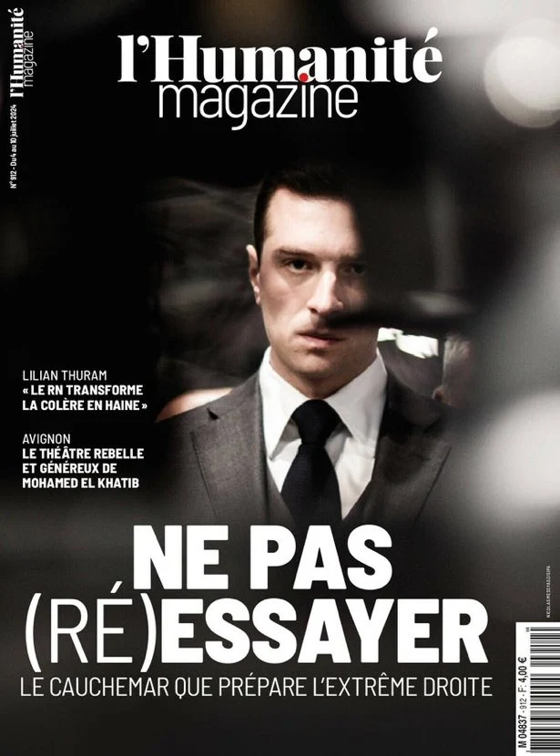
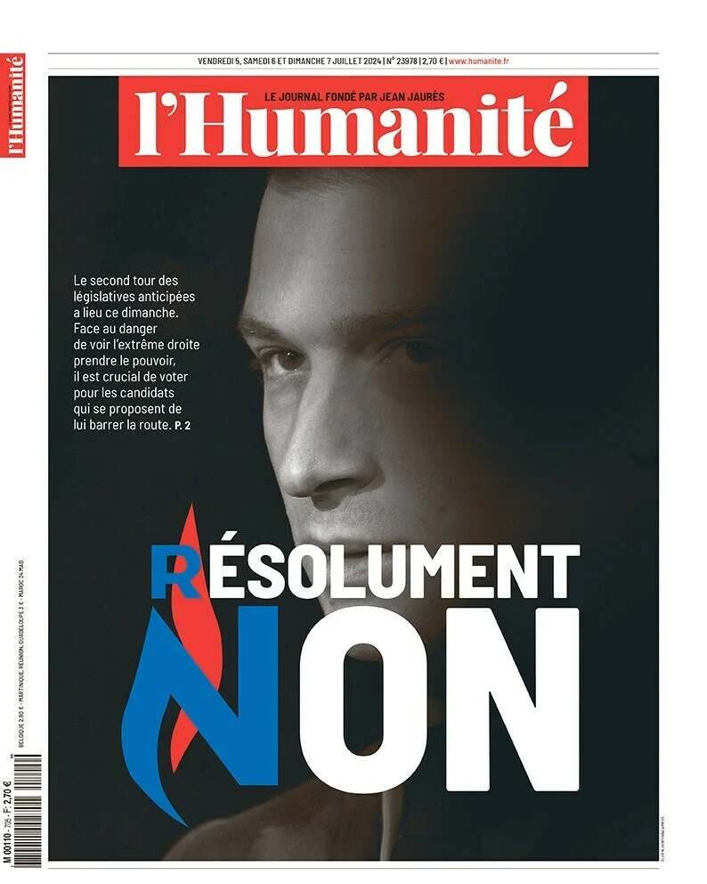

Publication sur X
Législatives 2024. Notre appel avant le second tour du 7 juillet
Date de publication sur X · 5 juillet 2024
Repères éditoriaux
Le texte d’origine indique « 7 juin ». Le second tour des législatives a eu lieu le dimanche 7 juillet 2024. La publication Facebook du 5 juillet donne le contexte de l’appel.
Texte de la publication sur X
Contre la Haine, dimanche 7 juin votons
#NouveauFrontPopulaire https://t.co/Vm54mfFbR1


Sources
PCF 79 · @79Parti sur X · AR-0005-TW-1809227074889982048
À lire aussi · Sénatoriales 2026. Le PCF 79 présente Frédéric Giraud et Valérie Mazé
Publications associées
- Second tour des législatives. Notre appel du 5 juillet · Version Facebook de l’appel du 5 juillet